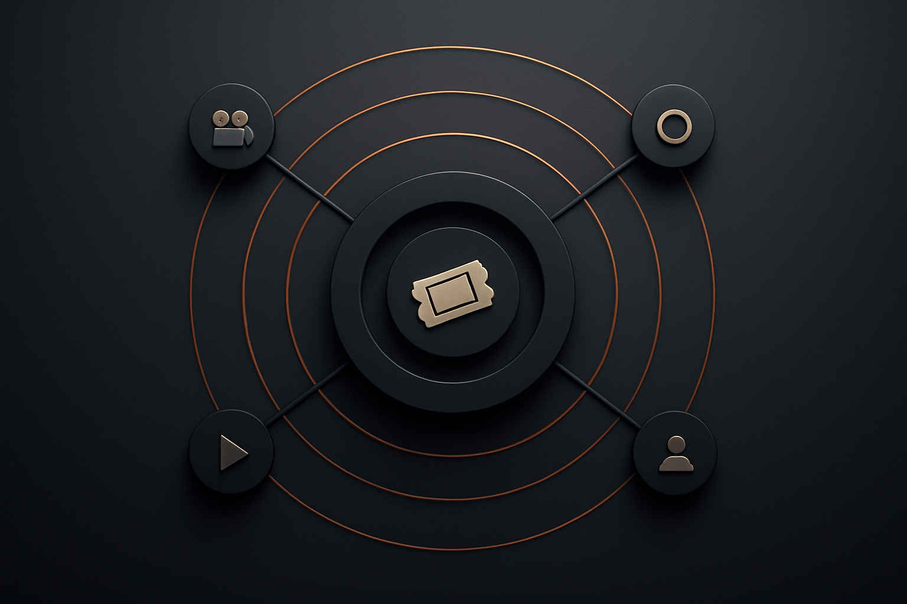
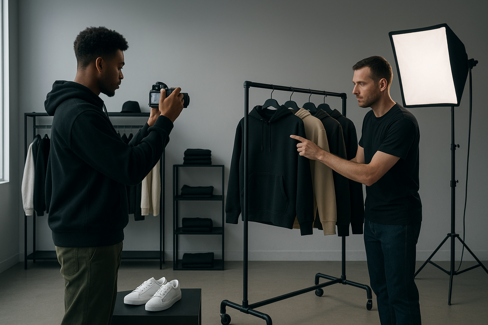

Holiday Flagship Early-Access & Pop-up Tests · 2025-11-19 → 2025-11-26 · Run 20251126-135547
Concentrated early-access windows create scarcity and content assets that lift weekend foot traffic and conversion, converting event attention into measurable sales. -> tracks Retail sales ≈ 1.03× LY -> Stand up the two-week A/B holdout now: Arm A legacy markdown; Arm B bundle + GWP + loyalty. Lock inventory SKUs and traffic windows for both arms.
Meta: 2025-11-19 -> 2025-11-26 · US · Confidence Medium · ~18 min
Executive Take
Concentrated early-access windows create scarcity and content assets that lift weekend foot traffic and conversion, converting event attention into measurable sales. -> tracks Retail sales ≈ 1.03× LY -> Stand up the two-week A/B holdout now: Arm A legacy markdown; Arm B bundle + GWP + loyalty. Lock inventory SKUs and traffic windows for both arms.
Operator Moves | Immediate | Positioning | Compounding | | --- | --- | --- | | Stand up the two-week A/B holdout now: Arm A legacy markdown; Arm B bundle + GWP + loyalty. Lock inventory SKUs and traffic windows for both arms. | Event Sprint Calendar: What is happening: Condensed creator-led studio days produce short-form assets and lift weekend foot traffic by about 20%. Why it matters: Attention concentrated into discrete windows creates scarce, shareable content that extends value beyond the event. What operators should do: Run rolling 8-week event sprints and measure foot traffic, event conversion, and assets per event. | Event-Driven Revenue Lift: Concentrated weekend and ticketed micro-events will drive measurable foot-traffic spikes and short-form content production that converts to online sales. Operators who run pilot 4- to 8-week calendars will capture first-party signals and shift a share of promotional spend to targeted offers, preserving margin [^1][^3][^7]. Early KPIs will show 15–25% weekend foot traffic lift and a rising percent of sales attributed to event-linked offers [^1][^3]. |
Signals & Thesis
Measurement Spine Anchors | Metric | Target | Notes | | --- | --- | --- | | Metric | Retail sales ≈ 1.03× LY | US holiday retail growth | | Metric | Detect 10–15% uplift; stretch ≥25% in top markets | Foot-traffic uplift target from in-store content | | Metric | Move early-window share from ~12–15% to 20–30% | Early-window transaction share |
Measurement Plan | Metric | Expression | Window | | --- | --- | --- | | Event CPA | CPA ≤ 0.80× baseline | Thanksgiving weekend | | Buyer activity share vs promo intensity | Transactions in early window 20–30% while promo SKU share ≈ LY | Nov 13–26 | | QR / scan redemption | Redemptions ≥5% of footfall on event days | Nov 21–26 |
Mechanisms - Timing: Weekends and ticketed micro-events are the high-value windows — Attention peaks when stores concentrate experiences into discrete windows; store-studio days and ticketed micro-events drive both foot traffic and direct-attributed online orders as shown by Splits59 and Stockboy examples [^3][^1]. (Second-order: KPI pilots suggest runs like four creator-led studio days or six micro-events produce content and can lift weekend foot traffic by roughly 20% while creating measurable conversion cascades from event creatives [^1][^3].). Constraint: Instrument a rolling 8-week event calendar and track weekend foot traffic, event conversion rate, event-to-online attribution, and content assets produced per event. - Discounting math: attention replaces blanket markdowns — When stores become content properties, promotions shift from broad price cuts to targeted, content-linked offers that capture attention and preserve margin [^7][^4]. (Second-order: First-party data audits and agentic commerce tooling enable dynamic offers that can be measured as percent of sales via targeted offers versus broad markdowns, changing the denominator in discount economics [^7].). Constraint: Instrument percent of sales from targeted offers versus markdowns, average margin per transaction, dwell time, and attachment rate. - Content economics: stores produce assets that compound — In-store activations and studio days convert rent hours into content production with low incremental cost; Stockboy and Splits59 show brands producing short-form assets directly in retail footprints [^1][^3]. (Second-order: Concrete KPIs such as eight short-form assets per studio day or a dozen videos from micro-events turn into extended campaign runs and earned mentions, stretching each event’s ROI well beyond on-site sales [^1][^3][^2].). Constraint: Instrument content assets per event hour, view-through attribution to sales, earned media mentions, and cost per content asset. - Landlord playbook: monetize vacancies as creative inventory — Converting underused bays into short-term creative inventory is proving repeatable; Zero Empty Spaces has operated activations across 33 locations to revitalize retail footprints and drive earned media [^2]. (Second-order: Property managers moving toward curated, experiential portfolios create hybrid revenue models through activation fees, branded shop-in-shops, and event programming that align landlord and brand incentives [^4][^5].). Constraint: Instrument a pilot activation with hybrid economics, and track adjacent-store visits (target +15%), earned media mentions, and short-term revenue per bay.
Window & Guardrails - Window: 2025-11-19 -> 2025-11-26 - Region focus: US
Risks & Exceptions - Low Content Reach and Amplification Failure — Events produce limited or low-quality short-form assets that fail to reach audiences.. Detect Low view/impression rates on event videos; poor engagement on social posts; low uplift in event-driven traffic or online orders within 7 days.. Mitigate Standardize a rapid content playbook, allocate a small paid amplification budget for core assets, run creator-led studio days to improve shareability, and A/B test formats. KPI: impressions per asset and event conversion rate. [1][3]. - Operational Coordination Breakdown — Tenant, property manager, and creators fail to align on timing, staffing, or production requirements.. Detect High no-show rates, shortened events, poor customer experience scores, negative local press mentions.. Mitigate Use a simple 8-week rolling calendar, assign a single event owner, run checklists for production and staffing, and pilot in one underperforming bay first. KPI: on-time execution rate and NPS for events. [2][4]. - Attribution and Data Failure — Inability to tie content-driven offers to first-party customer signals leads to noisy ROI and reversion to markdowns.. Detect Low match rates between event attendees and CRM records, unclear percentage of sales from targeted offers, inconsistent uplift signal across channels.. Mitigate Run a first-party data audit, instrument event signups and POS capture, deploy dynamic content-linked offers, and measure percent of sales from targeted offers versus broad markdowns. KPI: match rate and percent sales via targeted offers. [7]. - Reputational or Safety Incident at Event — Crowd mismanagement, inappropriate activations, or brand-mismatch create negative publicity.. Detect Spike in complaints, social mentions with negative sentiment, local media coverage, or security incidents during events.. Mitigate Define event safety and brand guidelines, cap attendance, brief partners on brand standards, secure permits, and have escalation protocols. Pilot low-risk activations before scaling. KPI: complaints per event and incident rate. [5][2].
Mini Case Story
Stockboy transformed its streetwear shop into a creative studio that produces content and helps other creators scale. (What happened then vs now.) Operators read it as proof and Test running 4 creator-led studio days to produce short-form assets and measure weekend foot traffic and conversion. (What brand/operators should test.).
Closing Frame
If Shop Becomes Creator Studio is true, Stand up the two-week A/B holdout now: Arm A legacy markdown; Arm B bundle + GWP + loyalty. Lock inventory SKUs and traffic windows for both arms. becomes optimal.
One-Line Mental Model
Measurement must tie door counts, QR scans, and QR→POS attribution to control CPA and validate the early-window share target.
Sources & Confidence
Confidence: Medium (0.93). 0.9
- chicagoreader.com (2025-11-26): Stockboy transforms its streetwear shop into a creative studio
- bisnow.com (2025-11-26): Vacant Retail Space Becomes A Blank Canvas For Artists
- forbes.com (2025-11-26): Inside Splits59’s New NYC Pop-Up: A First Look At The Activewear Brand’s Retail Debut
- bisnow.com (2025-11-26): Retail Property Management Enters Its Next Phase: Integrated, Experiential And Connected
Generated 2025-11-26 13:58 · Window 2025-11-19 -> 2025-11-26 · Region US
Visual Hero
Operators must choose a short, concentrated event window that trades steady daily traffic for intense, shareable attention. The mechanism is simple. This concentrated window creates content that converts beyond the hour. Arranging a merch hero group while a creator shoots short-form clips. Operator nods, signaling go. Momentum locks. Precise, collaborative, confident
Visual Notes

Signal Map: Concentric geometry: center event node, inner ring audience paths, outer ring distribution channels. The signal underneath is pulsed attention moving outward.

Case Study 1: Streetwear shop converted into a creator studio. Eye-level composition. Raw concrete floor, warm wood fixtures.